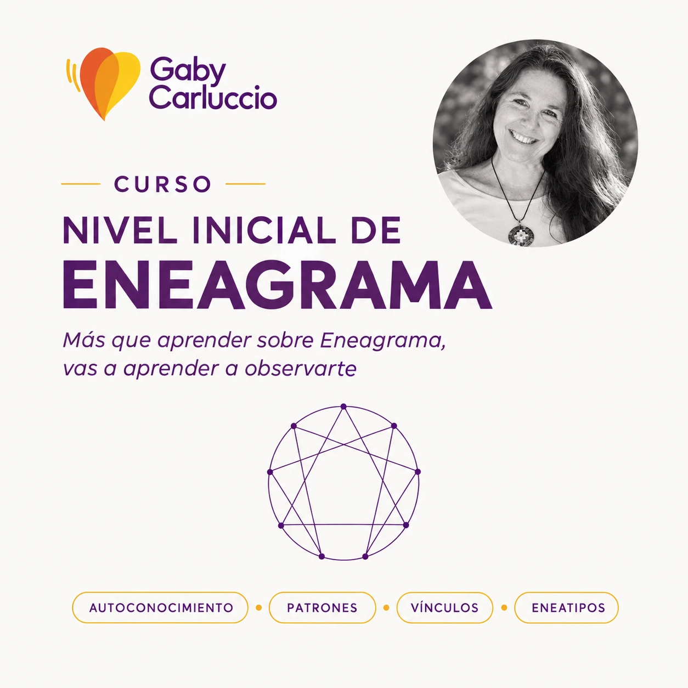

CURSO
Nivel Inicial de Eneagrama
Con Gaby Carluccio, en Arcos V
Ya están abiertas las inscripciones
Una propuesta teórico-práctica para profundizar en el autoconocimiento, la inteligencia emocional y la comprensión de nuestras dinámicas personales y vinculares a través del Mapa Personal de Eneagrama.
- 👥 Grupo reducido
- 📍 Núñez, Buenos Aires
- 🗓️ 24 y 31 de octubre · 21 y 28 de noviembre
- ⏰ 9 a 13 hs.
Consultar por WhatsApp
¿Qué vamos a trabajar?
Más que aprender conceptos sobre Eneagrama, vas a aprender a observarte.
- Conocerte mejor: descubrir qué patrones de personalidad influyen en tu manera de pensar, sentir y actuar.
- Entender qué hay detrás de tus reacciones: reconocer qué situaciones te movilizan, qué te genera temor y qué suele llevarte a reaccionar de determinada manera.
- Comprender tus fortalezas y tus zonas de dificultad: observar aquello que te potencia y aquello que, cuando funciona en automático, puede limitarte.
- Conocer cómo funciona cada uno de los 9 eneatipos: sus diferentes maneras de percibir, vincularse, afrontar lo que les sucede y relacionarse con los demás.
- Reconocer tu manera habitual de responder frente a los desafíos: para empezar a generar un espacio entre lo que sucede y la respuesta que elegís dar.
- Llevar esta mirada a tus vínculos y a tu vida cotidiana: comprender mejor a los demás sin dejar de comprenderte a vos mismo.
¿Qué incluye la propuesta?
- 4 encuentros presenciales dinámicos y guiados.
- Material de estudio completo.
- Un espacio cuidado de autoobservación, intercambio y reflexión compartida.
- Trabajo sobre el propio mapa personal de Eneagrama.
- Acompañamiento durante el proceso.
Este curso es una invitación a conocerte, comprender tus patrones limitantes y ampliar tu manera de estar en el mundo.
← Volver a los encuentros